Learning in Robotics Coursework - In Progress
The aim of this course was to teach students a variety of learning algorithms for robotic implementation; coursework included learning an MDP, SLAM using a particle filter, and training a NeRF on image data.
Policy Iteration on an MDP
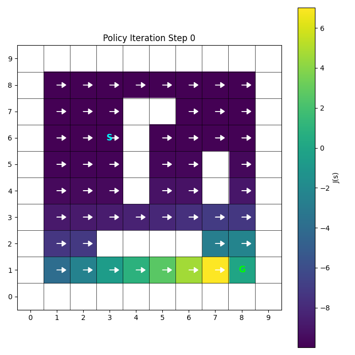
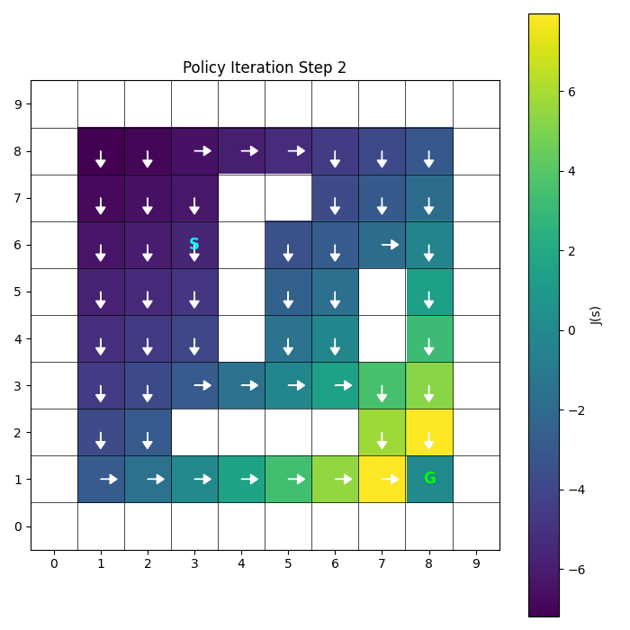
SLAM using a particle filter, EKF implementation
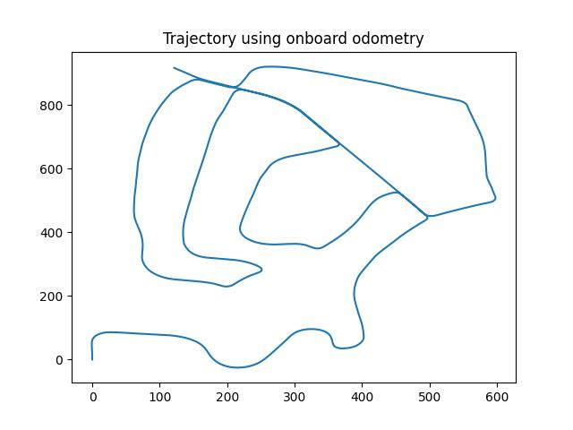
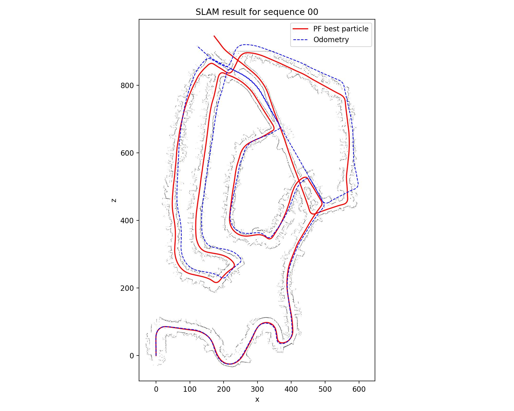
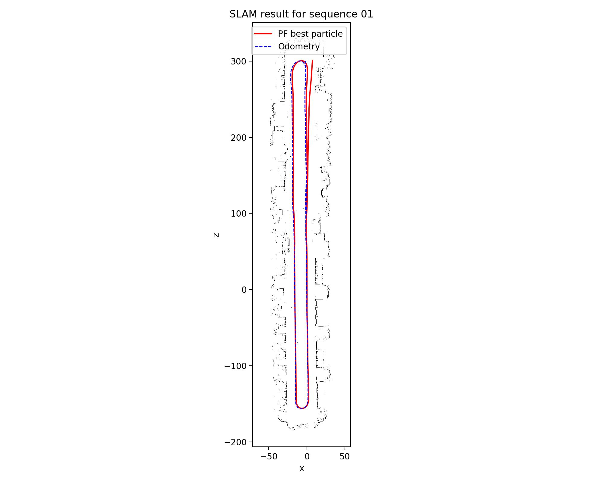
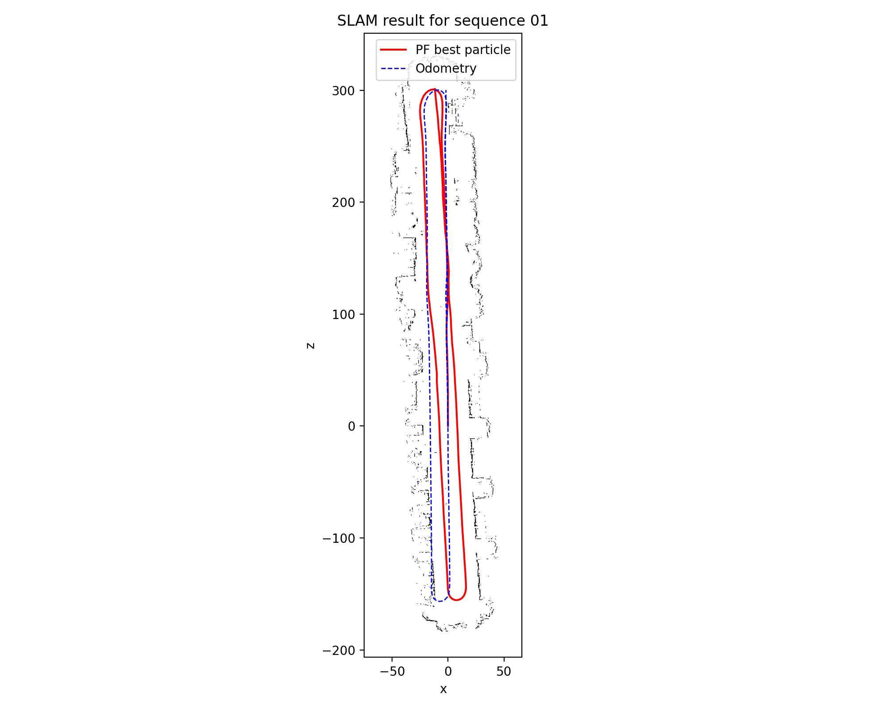
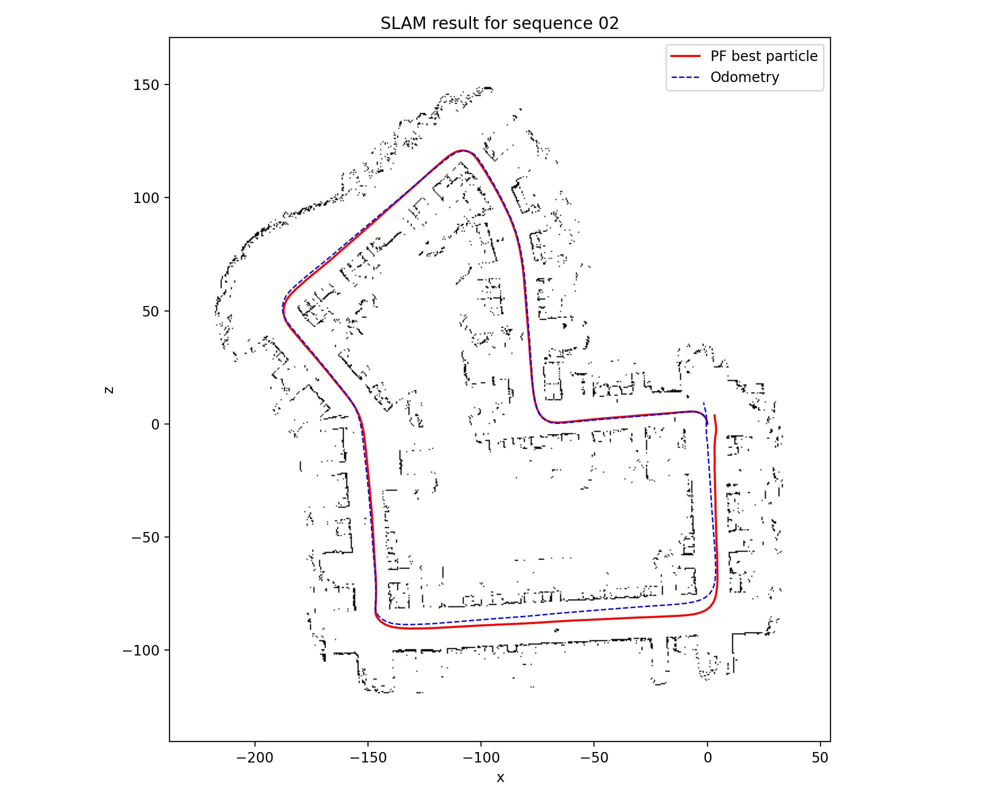
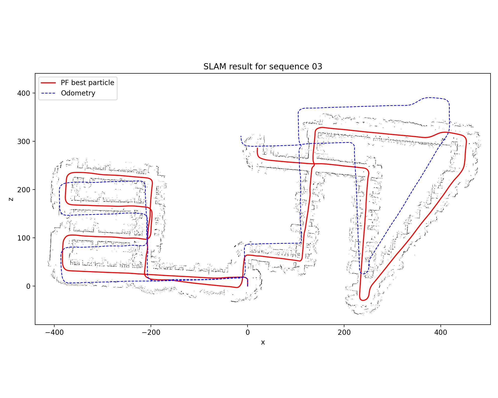
NeRF Training
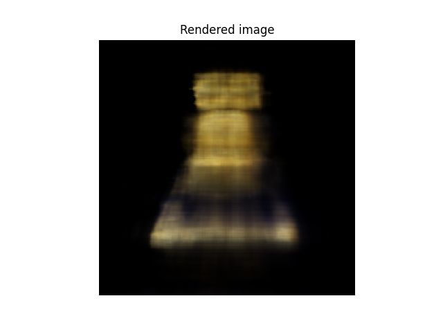
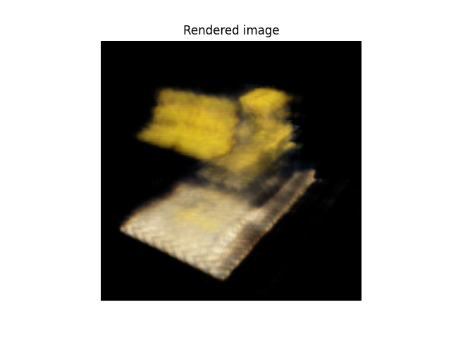
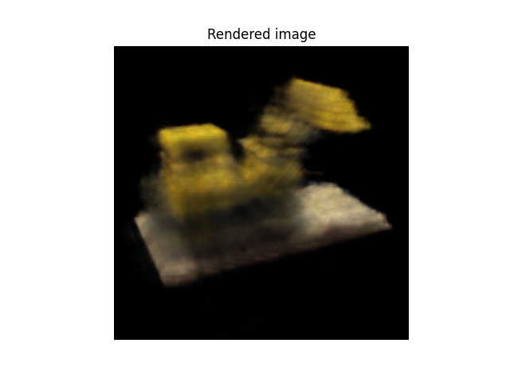
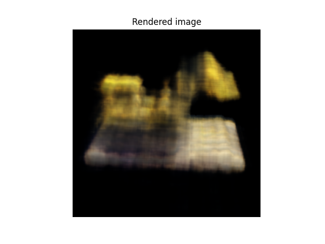